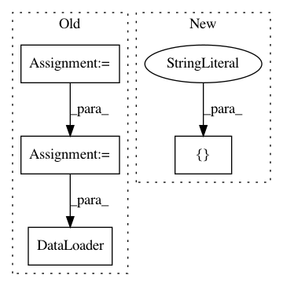

1f2385d79dc9d1c042df2f1342a5239d55e63edd,inferno/io/box/bsd500.py,,get_bsd500_loaders,#Any#Any#Any#Any#Any#,74
Before Change
split=split,
joint_transform=get_joint_transforms(offsets, split=split)))
joint_transforms = get_joint_transforms(offsets)
train_set = BSD500(root_folder,
split="train",
joint_transform=joint_transforms)
val_set = BSD500(root_folder,
split="val",
joint_transform=joint_transforms)
test_set = BSD500(root_folder,
split="test",
joint_transform=get_joint_transforms(offsets, split="test"))
return DataLoader(train_set, shuffle=shuffle, num_workers=num_workers), \
DataLoader(val_set, shuffle=shuffle, num_workers=num_workers), \
DataLoader(test_set, shuffle=shuffle, num_workers=num_workers)
After Change
split=split,
joint_transform=get_joint_transforms(offsets, split=split)))
splits = ["train", "val", "test"]
ds = [BSD500(root_folder,
split=s,
joint_transform=get_joint_transforms(offsets, split=s))\
In pattern: SUPERPATTERN
Frequency: 3
Non-data size: 4
Instances
Project Name: inferno-pytorch/inferno
Commit Name: 1f2385d79dc9d1c042df2f1342a5239d55e63edd
Time: 2018-01-22
Author: steffen.wolf@iwr.uni-heidelberg.de
File Name: inferno/io/box/bsd500.py
Class Name:
Method Name: get_bsd500_loaders
Project Name: AllenCellModeling/pytorch_fnet
Commit Name: 3abe8e680e1f8000dbc6bf2c7aa11bd53e513368
Time: 2018-01-18
Author: chek.o@outlook.com
File Name: train_model.py
Class Name:
Method Name: main
Project Name: ecs-vlc/torchbearer
Commit Name: 0de148f6892361e61d4b68cf97814e73692f6b1a
Time: 2019-03-14
Author: mp2u16@ecs.soton.ac.uk
File Name: docs/_static/examples/gan.py
Class Name:
Method Name: